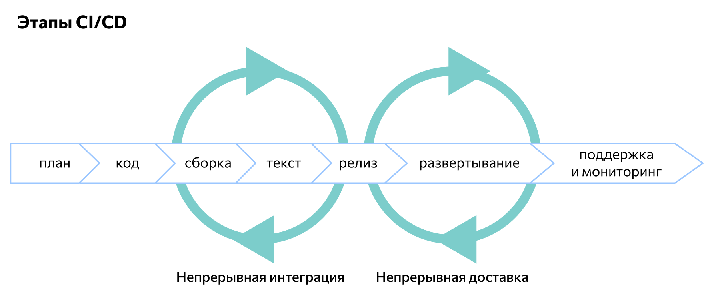

CI/CD (Continuous Integration, Continuous Delivery — непрерывная интеграция и доставка) — это технология автоматизации тестирования и доставки новых модулей разрабатываемого проекта заинтересованным сторонам (разработчикам, аналитикам, инженерам качества, конечным пользователям и др.).
Принципы CI/CD:
Концепция непрерывной интеграции и развертывания относится к agile-методологиям разработки программного обеспечения. Ее основная цель — уделение достаточного внимания бизнес-требованиям, безопасности и качеству кода конечного продукта. В рамках подхода решаются следующие задачи:
- автоматизация последовательной сборки, упаковки и тестирования программных продуктов;
- автоматизация развертывания приложения в различных окружениях;
- минимизация ошибок и уязвимостей программного продукта.
Разработка по методике CI/CD соответствует таким основным принципам:
Распределение ответственности.
Задачи и этапы разработки разделяются между членами команды или ее подгруппами (при работе над большим проектом). Рабочий процесс организуется с учетом бизнес-логистики, внедрения сквозных функций, проведения тестов, безопасности хранения данных и т.д.
Сокращение рисков.
Каждый разработчик или подгруппа разработчиков должны стремиться минимизировать уязвимости и ошибки на всех этапах разработки. Для этого постоянно контролируется бизнес-логистика, проводится пользовательское тестирование продукта, оптимизируется хранение, обработка данных и т.д.
Оптимизация обратной связи.
Успех проекта зависит от того, как работают друг с другом разработчики, клиенты и пользователи. Это влияет на скорость внесения в приложение корректировок и обновлений. Если сборку и тестирование можно автоматизировать, то во многих других операциях требуется участие человека. Чтобы взаимодействие происходило конструктивнее, уменьшается количество посредников между заказчиком, исполнителями и пользователями.
Создание рабочей среды.
Для удобства совместной работы у разработчиков должно быть общее рабочее пространство. Помимо основной ветки процесса в нем должна быть побочная – в ней удобнее проводить тестирование, вносить корректировки, отслеживать отказоустойчивость и т.д.
СI/CD представляет собой современную аналогию конвейерного производства. Их объединяют четкое распределение труда, непрерывный, потоковый характер рабочего процесса, параллельное выполнение сразу нескольких задач (например, кодинга и тестирования). Сегодня эта концепция является доминирующей в DevOps.
Этапы CI/CD:
Написание кода.
Каждый разработчик создает код отведенного ему модуля и тестирует его в ручном режиме. Затем разработанный и проверенный программный блок интегрируется в основной ветке с текущей версией продукта. Как только все модули будут опубликованы в главной ветке, команда переходит к следующему этапу.
Сборка.
Заранее подобранная система контроля версий запускает автоматизированную сборку и тестирование всего продукта. Триггеры могут быть настроены автоматически или вручную. Автоматическая сборка выполняется с помощью Jenkins или другого сервера непрерывной интеграции.
Ручное тестирование.
Как только CI-сервер закончит автоматизированную сборку продукта, он передается тестировщикам на проверку. Они используют различные методики тестирования для выявления и устранения ошибок и уязвимостей программы.
Релиз.
После исправления ошибок вычищенный и отлаженный код переходит на этап релиза для клиентов. Его проверяет заказчик, возможно, с привлечением своих специалистов или ограниченной группы пользователей. По результатам проверки код отправляется на доработку или согласуется.
Развертывание.
Текущая версия программы размещается на продакшн-серверах разработчика. Заказчик может работать с программой, исследовать ее функции, искать уязвимости.
Поддержка и отслеживание.
После развертывания приложение становится доступным конечным пользователям. Параллельно этому разработчики выполняют его поддержку и одновременно мониторят реакцию пользователей, анализируют их опыт взаимодействия с программой.
Планирование.
На основании данных, полученных при изучении пользовательского опыта, разработчик подготавливает план доработок, включающий новые функции, исправление ошибок и т.д. После этого он вносит все корректировки в продукт — и цикл разработки начинается снова.
Таким образом, рабочий процесс по методологии CI/CD включает как последовательные, так и параллельные этапы. Именно для распараллеливания в рабочем пространстве создается побочная ветка — в ней проще вести работу, не вмешиваясь в основной код до тех пор, пока программируемый модуль не будет готов к интеграции. Условно рабочий процесс по методологии CI/CD можно представить в виде следующей схемы:
Преимущества CI/CD:
Сокращение сроков разработки.
Методология уменьшает время доработок до нескольких дней, в сложных проектах — недель. Это позволяет разработчикам быстрее тестировать и опробовать нововведения, а затем внедрять их в продукт раньше конкурентов.
Отбор перспективных вариантов.
Быстрое тестирование и большое количество итераций позволяют разработчику вовремя отсеивать бесперспективные варианты кода на начальных этапах. Это также способствует экономичному расходованию времени и ресурсов без их распыления на тупиковые направления.
Качество тестирования.
Сочетание ручной и автоматизированной проверки позволяет выявлять ошибки на ранних этапах разработки. Это снижает вероятность их накопления на этапе релиза, что еще больше сокращает время работы над проектом.
Недостатки CI/CD:
Высокие требования к опыту.
Рабочий процесс в любой компании можно перевести на методологию CI/CD. Однако это требует от разработчиков как знания самой концепции на практическом уровне, так и умения быстро реорганизовать процессы в самой организации. Иными словами, CI/CD имеет достаточно большой порог вхождения в сравнении со многими традиционными методологиями.
Сложность постоянного взаимодействия.
Непрерывная интеграция и доставка программного продукта требуют от разработчиков высокой скоординированности действий. На практике это означает, что должно быть отдельное лицо, которое занимается организацией рабочего процесса и налаживанием взаимодействия между членами команды.
Инструменты для CI/CD
Так как непрерывная интеграция и развертывание подразумевает автоматизацию многих процессов в ходе разработки, для этого созданы различные программные инструменты и сервисы:
GitLab.
Эта платформа позволяет управлять хранилищами проекта, документировать результаты тестирования и доработок, анализировать и дополнять функциональность проекта, выявлять и устранять ошибки.
Docker.
СD-система, позволяющая контейнеризировать проект, то есть упаковать его со всем окружением и зависимостями.
Travis-CI.
Сервер, который можно подключать к виртуальным репозиториям GitHub с минимальными настройками. Благодаря использованию облачных технологий его не нужно отдельно устанавливать.
Jenkins.
Один из самый популярных DevOps-инструментов, совместимый со всевозможными плагинами для адаптации под различные проекты и задачи.
PHP Censor.
CI-сервер, автоматизирующий сборку PHP-проектов. Может работать с репозиториями GitLab, Mercurial и другими, с библиотеками для тестирования Atoum, PHP Spec, Behat.
Возможность оперативно вносить изменения, постоянно тестировать и дорабатывать продукт, взаимодействовать не только друг с другом, но и с клиентом — вот что делает концепцию CI/CD популярной среди разработчиков. Сегодня ее понимание и практическое освоение являются важной рекомендацией при разработке как крупных, так и небольших проектов.